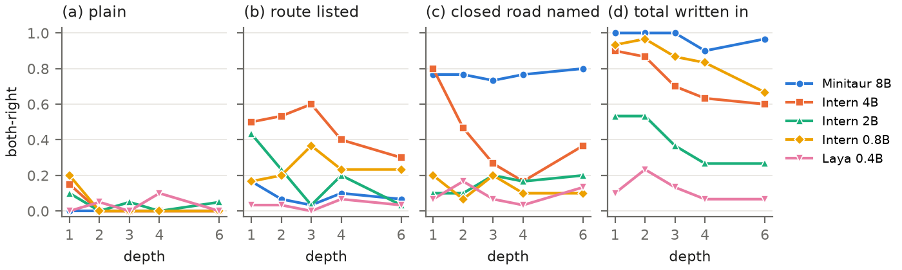
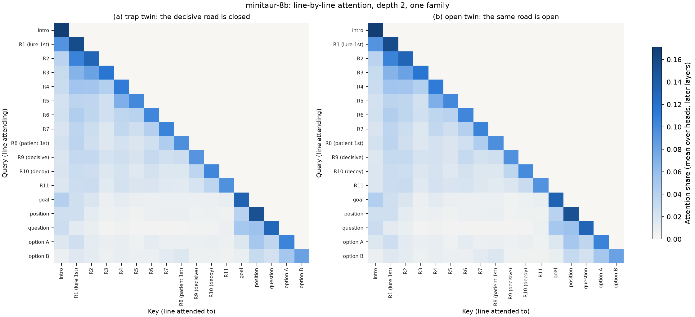
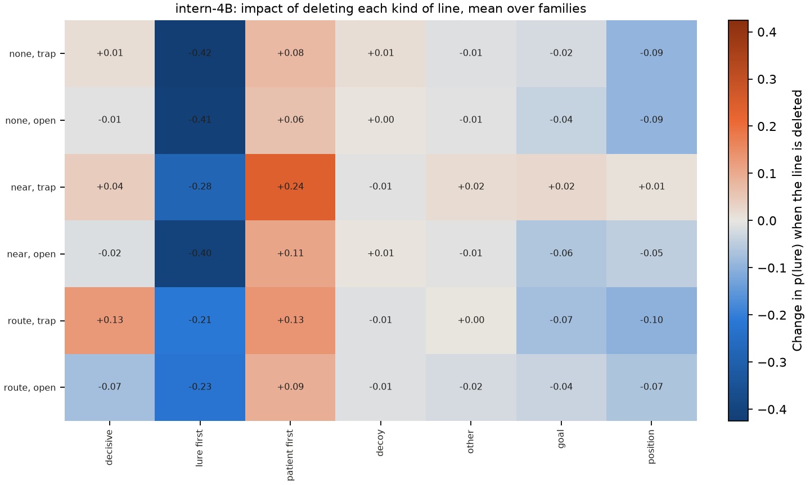
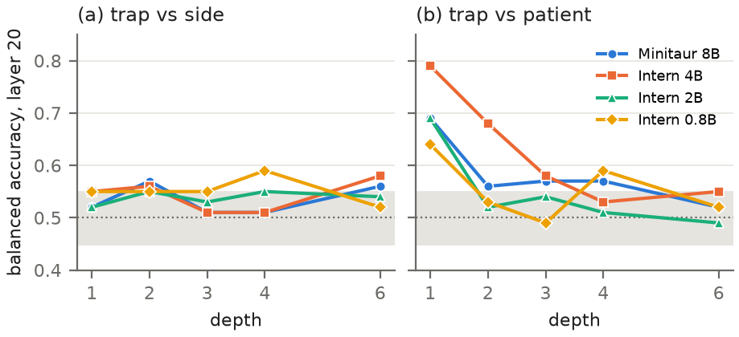
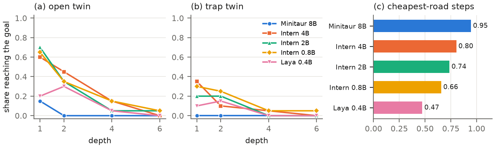

Decision models answer in one call, with no written reasoning. We trace the exact point where they stop following a fact a few steps away, from what they choose down to what happens inside them.
The animation is the main finding: the car takes the cheap road, meets the closed one, and goes back and forth.
The problem
Fast decision models return one probability per option. Agents use them to pick their next action, because they are quick and calibrated. But many choices depend on what happens several steps later. An option can look best now and block a better outcome down the road.
Does the decision still follow that distant fact? And if it doesn't, which step inside the model breaks?
Counterfactual twins
Every scenario comes as twins that differ in exactly one fact, far from the first move. If the decision changes between twins, only that fact can explain it. A program certifies every pair: one best move, one changed fact, a flipped answer.
One road two segments down the tempting route is closed.
Best first move: the patient road (28 min against 36).
What the models choose: the 4-minute road, in every twin.
Depth is how far down the route the deciding road sits, from 1 to 6 segments. A model scores both-right only if it gets the trap and the open twin right. Always taking the cheap road scores 0; guessing scores 0.25.
What a model reads
One request: a state, a question and two options. The model returns a probability for each option. This is the trap twin above, word for word as our generator writes it.
Roads between places. Every road can be driven in either direction. Times are in minutes.
- the east yard to the mill cross: 4 minutes
- the hill field to the upper cross: 1 minute
- the east cross to the upper cross: 2 minutes
- the forest well to the old hall: 6 minutes
- the east yard to the upper row: 11 minutes
- the mill cross to the mill dock: 7 minutes
- the east cross to the upper row: closed
- the east tower to the upper row: 2 minutes
...
Goal: reach the hill field in the least total time.
You are at the mill cross.
Which road should be taken next?
road_a: drive to the east yard (4 minutes)
road_b: drive to the mill dock (7 minutes)
Two questions, two phases
How far? Phase 1, behaviour
Twins in three task types (permit chains, block stacking, budget puzzles), asked of five deployed decision models through their APIs.
Sensitivity to the deciding fact fell to about zero within a few steps, and the immediately rewarding option took over.
Why? Phase 2, inside the model
Open-weight models we can open up: Laya (0.4B), Intern-Decision (0.8B, 2B, 4B) and Minitaur (8B). Graph routing as the main task, plus block stacking and permit chains.
Hints, probes, attention, attribution, steering, patching and live play, each aimed at one step of the path below.
Three steps from a fact to a choice
To act on a closed road far down a route, a model has to do three things. Each one can be where it breaks, and each predicts a different pattern of results.
The cross marks where our results point: the models find the fact but don't link it.
The hint ladder
We write one more piece of the reasoning into the option text, rung by rung. The lowest rung that fixes the choice shows which step was missing.
road_a: drive to the east yard (4 minutes)
road_b: drive to the mill dock (7 minutes)
The closure sits only in the road list. Every model is at the floor.

Both-right by depth, five open models, graph routing (development seeds, 20–30 scenario pairs per point). Writing the consequence into the option repairs the choice; listing the route helps only Intern 4B.
Found, not linked. Name the closed road inside the option and Minitaur gets both twins right about 77% of the time, at every depth. Distance in the graph costs it nothing once the link is made for it.
Linking has two parts. List the route's roads without their status, and Intern 4B checks them against the road list (0.30–0.60). Minitaur can't, even then.
The same pattern elsewhere. In block stacking and permit chains, every model sits at the floor, and writing the consequence in brings the large models to 1.00.
Inside the model
We group tokens into prompt lines and ask two questions of each line: does the decision look at it, and does it move the decision? Deleting one line and asking again measures the second.

Where Minitaur looks, line by line. Trap and open twins look almost the same.

What moves Intern 4B. Its first roads drive the choice. The closed road counts only once the route is listed, and then in the right direction in both twins.

The link probe. Every variant has one closed road; only its place changes. Whether it lies on the tempting route or beside it is not readable in any model.
Live play
Now the model drives the whole route itself, one road at a time, with its route so far in view. Even when the cheap route is the right one, models rarely reach the goal beyond two steps. They take the cheapest road on offer, which is usually the road back.

Goal reached by depth (20 runs per point) and the share of steps that take the cheapest road.
How we keep it honest
Certified twins
A program checks every pair: one best move, one changed fact, a flipped answer, and a decoy edit that must change nothing.
Pipeline checks
Each model passes easy items through the same pipeline first, so a failure is the model's, not ours.
Length and numbers
Padding every prompt to the same length, and comparing within one gap between totals, separates depth from prompt length and from number comparison.
Shortcut-free probes
The link probe removes a shortcut that an ordinary twin probe allows.
Real nulls
Shuffled labels for probes, and ten random directions for steering.
Preregistered
Six claims with pass rules were fixed in writing before the fresh-seed runs. The results on this page come from development seeds; the confirmatory runs are in progress.
What it means for agents
A fast decision model uses a consequence written next to an option. It does not work one out from the rest of the input, even one link away.
If an agent relies on one, compute the look-ahead in code and write the result into the option text.